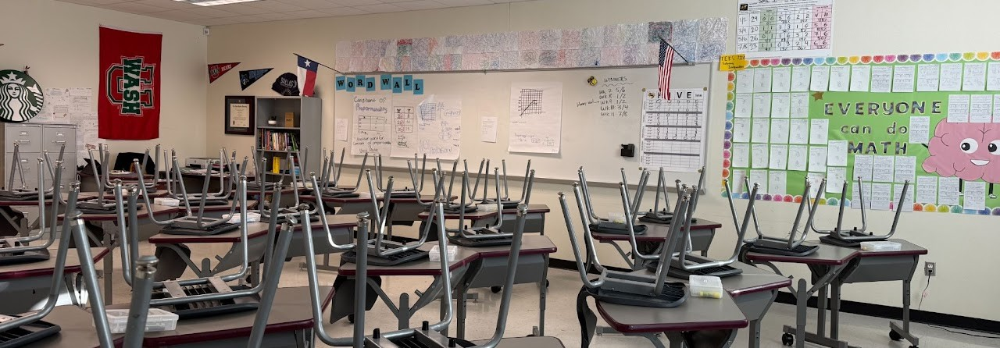
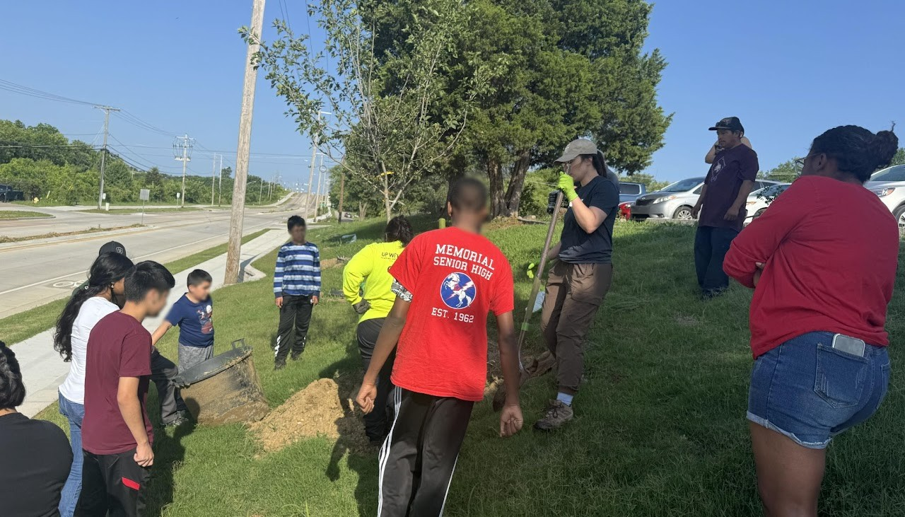
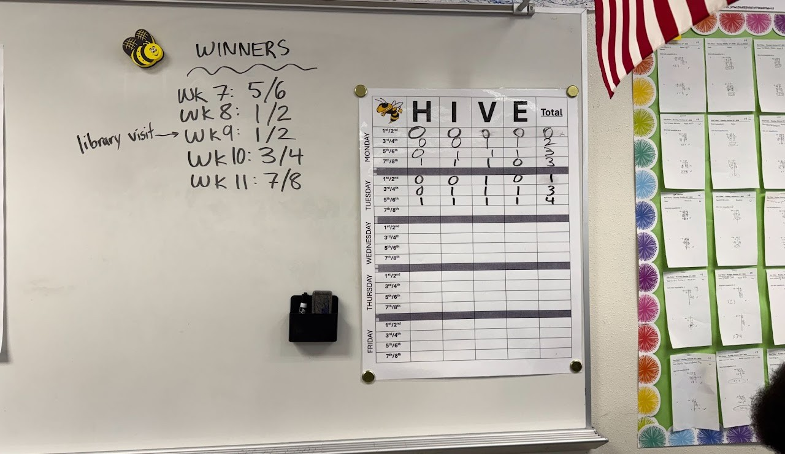
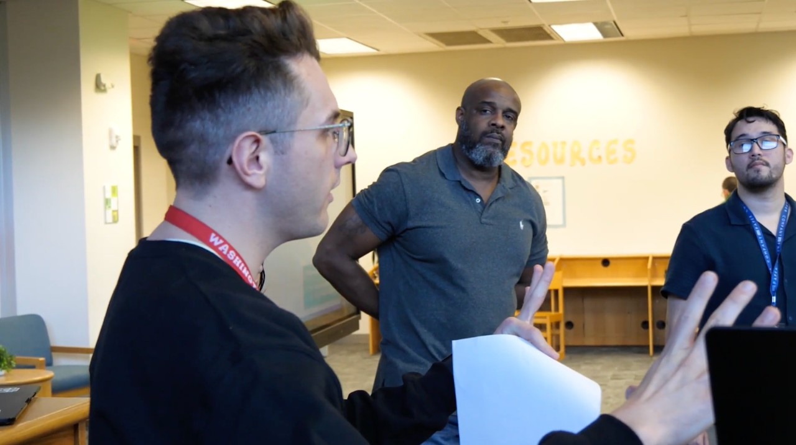

Teaching Portfolio · Dallas, Texas
Mathematics that disrupts stagnancy.
I'm Kirk Linam — a secondary math educator who finds the systemic gaps in schools and builds the assessments, programs, and partnerships that close them.

Welcome
From Tulsa to Dallas, one throughline: build what students need.
Welcome to my education portfolio. My name is Kirk Linam, and my journey in education began in 2022 after graduating with honors from Washington University in St. Louis with a Bachelor of Arts in Political Science. I joined the Teach for America Corps and completed my two corps years in Tulsa, Oklahoma teaching secondary mathematics and was awarded Middle School and District Teacher of the Year in 2024. I deepened my commitment to educational equity and pursued a Master's Degree in Educational Studies from Johns Hopkins University, graduating in May 2025 with a 4.0 GPA.
My philosophy centers on disrupting traditional norms that hold students back and fostering a classroom climate built on positivity, growth mindset, and relevance, drawing from culturally responsive pedagogy to create meaningful, engaging opportunities. I know from experience that 21st century education demands attention to shifts in student trends, community contexts, and emerging technology.
In this portfolio you will find projects spanning the school and district level, each emerging from a problem I identified and proactively worked with administrators to solve. I have consistently sought opportunities to strengthen the schools I work in and serve the students who depend on us to adapt to a rapidly changing world. Each year of teaching has sharpened my ability to spot systemic gaps and implement programs that disrupt stagnancy and outdated approaches.
Past Projects
Browse my work across four areas of practice.
Assessment & Curriculum Design
Redesigning 16 district interim exams, Building Thinking Classrooms, and leading PD on data-driven grading.
View case studies →
Community Partnerships
A 100-student community-action pilot with Tulsa Changemakers, culminating in tree planting and a grade-wide forum.
View case studies →
Classroom Climate Initiatives
Character-driven incentive systems adopted campus-wide, plus culturally relevant mathematics built on real Dallas data.
View case studies →
Technology & AI
Presenting at the Dallas ISD AI Forum, student progress dashboards in Apps Script, and Desmos Academy.
View case studies →